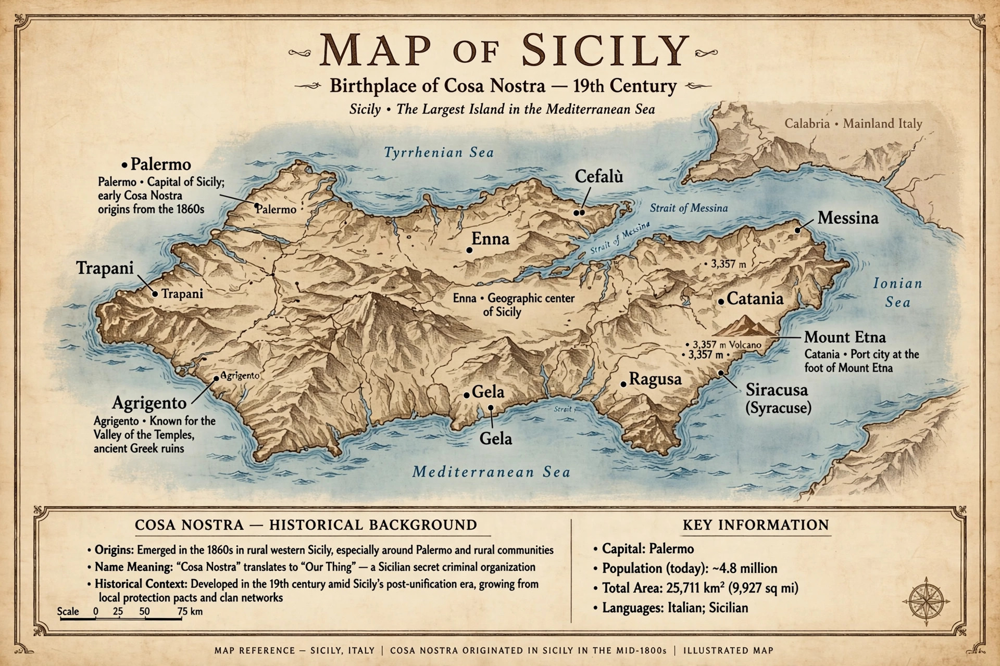

| Mafia / Cosa Nostra | |
|---|---|
| Founded | 19th century, Sicily, Italy |
| Territory | Sicily, Italy, United States and diaspora |
| Activities | Extortion, racketeering, drug trafficking, gambling, etc. |
The Mafia, known in Sicily as Cosa Nostra ("Our Thing"), is a criminal organisation and criminal society originating in Sicily in the 19th century, structured in families (cosche) bound by a code of silence and loyalty known as omertà. The term "mafia" has come to be applied generically to similar organised-crime groups.

Mafia groups emerged amid weak state authority in western Sicily, offering protection (often extortionate) and private enforcement. Mussolini's Fascist regime suppressed them in the 1920s; they revived after the Allied invasion in World War II. In the United States, Sicilian and Italian immigrants formed the American Mafia — the Five Families of New York and other families — flourishing during Prohibition. Post-war Sicilian Cosa Nostra moved into heroin trafficking, construction and politics, waging wars and assassinating anti-Mafia magistrates Giovanni Falcone and Paolo Borsellino in 1992, prompting a major state crackdown.
A family is led by a boss (capofamiglia), underboss and consigliere, with caporegime supervising soldiers (soldati), and associates. Initiation rituals, made membership, and provincial commissions coordinate families. Related Italian groups include the Camorra (Campania), 'Ndrangheta (Calabria) and Sacra Corona Unita (Apulia).
Activities include protection rackets (pizzo), extortion, blackmail, robbery, drug and arms trafficking, money laundering and infiltration of legitimate business and public contracts. Enforcement tools include Italy's Article 41-bis regime and Maxi Trials, and in the U.S. the RICO Act and witness cooperation by pentiti / informants.
The Godfather novels and films, Goodfellas and The Sopranos shaped popular images of the Mafia.